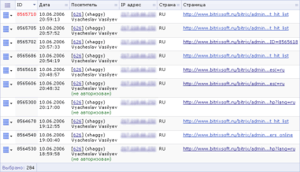
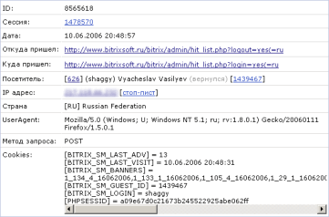

Данная форма отображает хиты посетителей сайта. Под термином хит понимается одна загрузка страницы. Нажатие на ссылку на сайте и загрузка страницы приводит к генерации хита. Перезагрузка страницы или запрос к несуществующей страницы (404 ошибка) также генерирует хит.
Фильтр
| Параметр | Описание |
|---|---|
| ID, логин, имя, фамилия* | Позволяет отобрать хиты зарегистрированных посетителей по маске их строк логина, имени, фамилия или ID. |
| ID хита | Маска идентификатора искомого хита. |
| ID сессии | Маска для отбора сессий, в течение которых пользователем были открыты страницы (сгенерированы хиты). |
| Дата | Интервал для отбора хитов по дате начала сессии. |
| ID посетителя* | Позволяет отобрать хиты по маске ID посетителей сайта. |
| Зарегистрирован | Определяет, отображать ли только хиты зарегистрированных посетителей, незарегистрированных или всех. |
| Впервые/вернулся | Флаг, позволяющий отфильтровать хиты посетителей, впервые посетивших сайт либо вернувшихся на сайт. |
| IP адрес* | Маска IP-адреса посетителей, сгенерировавших искомые хиты. |
| Страна* | Позволяет отобрать хиты по стране посетителя (определяется по IP адресу). В квадратных скобках можно ввести двухсимвольную аббревиатуру страны (напр., RU, BY, US). |
| UserAgent* | Маска UserAgent’ов посетителей, сгенерировавших искомые хиты. |
| Cookie | Маска для сопоставления с cookie посетителей (отбор хитов посетителей, которым были переданы определённые cookie). |
| Попал в стоп-лист | Флаг, позволяющий отфильтровать хиты посетителей, которые были добавлены в стоп-лист. |
| ID записи стоп-листа | Позволяет отобрать хиты заблокированных пользователей по маске идентификатора записи в стоп-листе. |
| Страница | Позволяет отфильтровать хиты посетителей по имени страницы и
сайту. В выпадающем списке (ошибка 404) можно указать, отображать ли только запросы несуществующих страниц. |
| Логика между полями | Переключатель, определяющий механизм поиска записей.
|
* - для данных полей вы можете воспользоваться специальными логическими выражениями.
Для того чтобы установить фильтр по заданным критериям поиска, нажмите кнопку Найти. Для отображения всех данных нажмите кнопку Отменить.
Контекстная панель
| Кнопка | Описание |
|---|---|
| Excel | Экспортирует данные из отображаемой таблицы в формат MS Excel. |
| Настроить | Позволяет перейти к диалогу настройки внешнего вида отчетной формы. |
Таблица
| Колонка | Описание |
|---|---|
| Меню действий |
Нажатие на кнопку действий в строке конкретного хита
отображает меню, содержащее команды:
|
| ID | ID хита в базе (ваши текущий хит отмечен красным). |
| Дата | Дата и время генерации хита (напр., загрузки страницы). |
| Посетитель | Если посетитель зарегистрирован, данные в формате:
|
| IP адрес | IP адрес посетителя. Ссылка на значении открывает страницу поиска информации по этому адресу (http://www.whois.sc/IP ). |
| Страна | Страна посетителя. |
| Страница | Страница хита. |
| Выбрано | Количество хитов, выбранных из базы данных. |
Пример
Нажмите на рисунок, чтобы увеличить
Подробный просмотр информации о хите
| Поле | Описание |
|---|---|
| ID | ID хита в базе. |
| Сессия | ID сессии в базе. |
| Дата | Время возникновения хита. |
| Откуда пришел | Ссылающаяся страница. |
| Куда пришел | Адрес страницы хита. |
| Посетитель | Регистрационные данные посетителя, ID посетителя. |
| IP адрес | IP адрес посетителя в момент хита. |
| Страна | Страна посетителя. |
| UserAgent | UserAgent браузера посетителя. |
| Метод запроса | Метод HTTP-запроса: GET либо POST. Подробнее о методах запроса можно прочесть тут: Method Definitions (или в переводе на русский). |
| Cookies | Содержимое файла cookie в момент хита. |
Пример
Нажмите на рисунок, чтобы увеличить
| © «Битрикс», 2001-2008, «1C-Битрикс», 2008 | 1С-Битрикс: Управление сайтом |